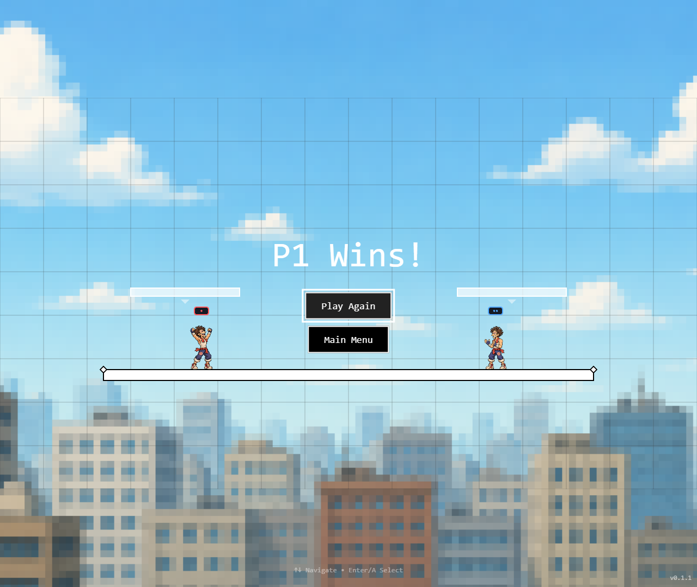
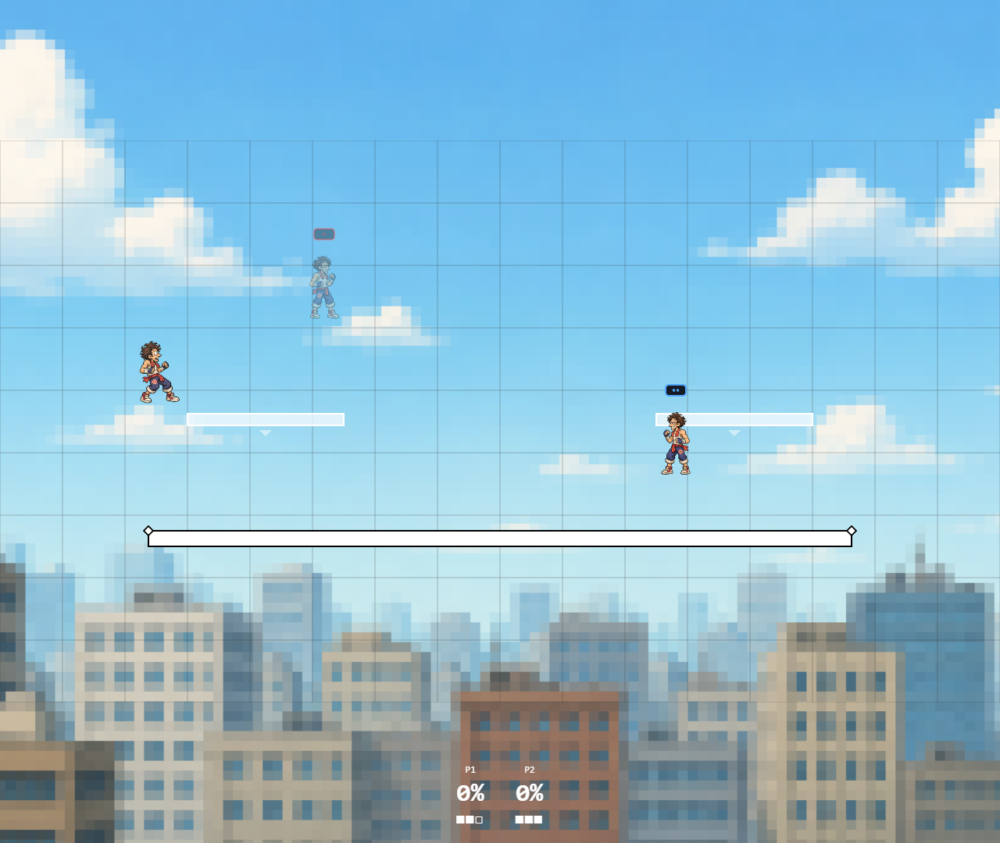
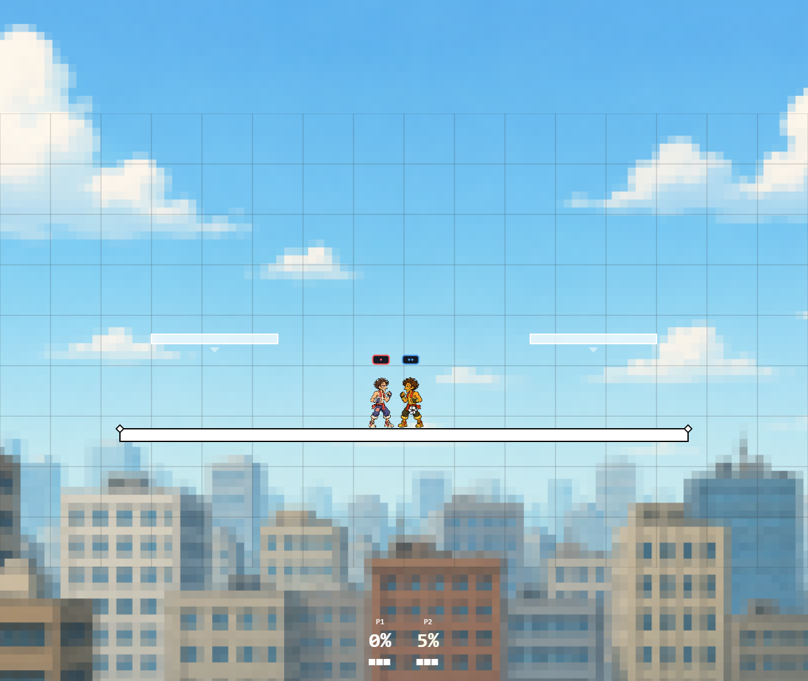
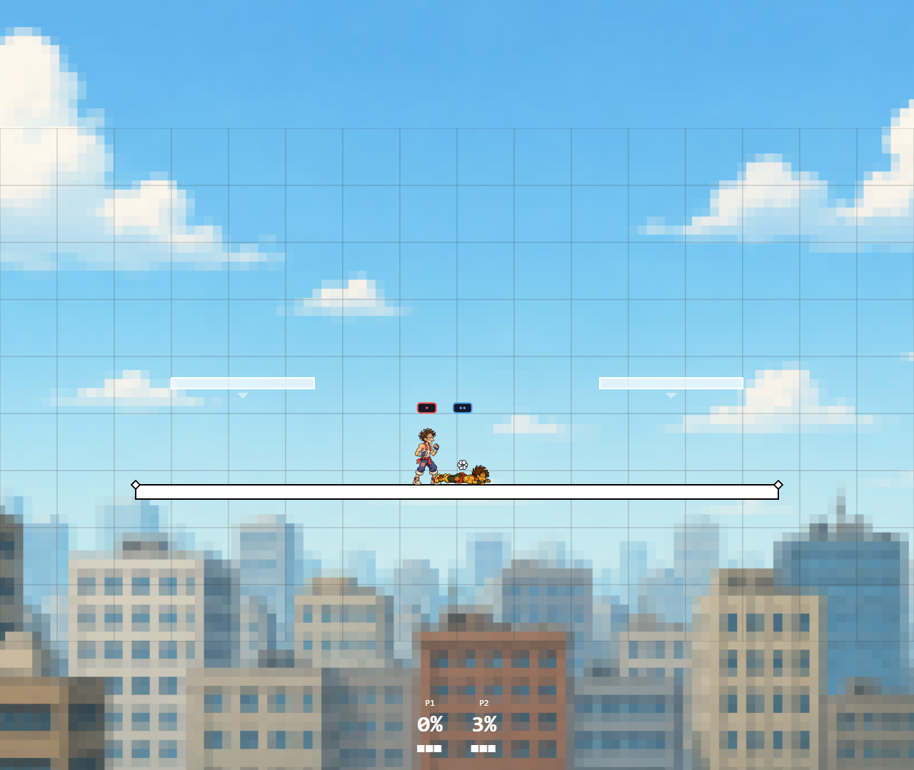

all-rounder — pages 1–4

All animations · Individual drawing pages · Evidence and remaining hooks
Drawing screen complete: all 2,289 registered body frames inspected across 24 montages. No new blocking palette, costume, silhouette or clipping issue found. Timing for unimplemented actions remains open.
135 clips enabled per fighter; one overview is retained as legacy. No prepared clips remain marked as pending hooks. Trip recovery and bounded jab locks are now connected with explicit custom tuning. Asset coverage does not certify Ultimate parity or exhaustive runtime reachability. Sprites are enabled by default. Release-based parry is connected; exact hitstop and broader Ultimate defensive timing remain open.
Production atlases: 17 pages total, fourteen live pages, 224 MiB decoded textures. This is an 90.9% reduction compared with the 409 equivalent source sheets. Every frame passed rectangle bounds and world-space root/socket checks with zero registration error.
B attack, A special, X/Y jump, triggers shield, bumpers grab; direct D-pad taunts. B confirms menus; A cancels. Read controller validation and physical-device checklist.
Saved live controller calibration, separate shield freeze, horizontal shield SDI and effect-based ASDI policy are connected. Full Ultimate parity remains incomplete. Read batch 34 evidence and limits.
Computed body hitlag, preserved contact poses and victim direction-change SDI are connected. Continuous ASDI drift removed. World distances and exception catalog remain custom. Read hitstop validation and remaining gaps.
Weighted stale moves, shield history, post-hit launch percent, hitstun and DI corrected; rage verified. Reference comparisons and remaining physics work.
Legacy attack circles now use sprite-scale geometry and narrower body damage capsules. Jabs no longer connect across large empty gaps. Measured before/after contact report.
Atlas sprites, duplicate-player identification, movement propagation, synchronized pause and refresh/rejoin passed.

Public assets included; all fourteen live atlas pages loaded with no failed requests or page errors.

Victory and defeat continue after gameplay simulation stops. Fighters are placed clear of result controls.

Keyboard/gamepad taunts and replicated KO copies are connected. KO presentation does not delay stock loss or respawn.

Real down-tilt trip and prone jab-lock events; both floor orientations and all fighter clip mappings passed browser checks.




The directional-dodge overview is retained for reference. Eight canonical directional clips replace it. Second gameplay pass: release parry, independent aim/jump, directional short-hop aerials, fractional damage and one-on-one damage scaling are connected. Automated CPU matches remain diagnostic, not human balance certification. Read the prioritized Ultimate-parity audit. Next: human/controller sessions, versioned stale/rage/knockback and complete defensive timing, analog movement/buffering, remote-network and device checks.
| air_dodge_directional | Legacy overview variant; eight canonical directional clips are connected |